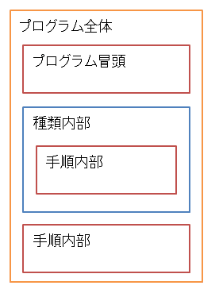
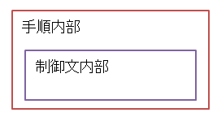
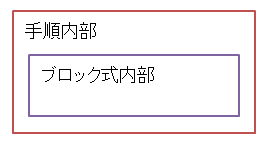

有効範囲
有効範囲(スコープ)とは、変数が使える範囲を表します。
定義された変数や手順は、その有効範囲の中で使えます。変数は有効範囲を超えた場所からはアクセスできず、手順も有効範囲を超えた場所からは呼び出せません。
プロデルでは、有効範囲の単位として次のような場所があります。
- プログラム全体
- 種類宣言文内部
- 手順宣言文内部
- 制御文(条件判断文・繰り返し文)内部
- ブロック式内部
また、変数については「明示的に宣言した場合」と「宣言せずに代入した場合」とで有効範囲が変わる場合があります。
有効範囲が有効な要素
それぞれの有効範囲には、次のような要素が状態として保持されています。プログラムは、その有効範囲の保持状態によって解釈したり動作します。
- 変数
- それ(最後に実行した手順呼出し文の戻り値)
- エラー情報(エラーの内容や無視するかどうかの設定)
なお、有効範囲の場所によっては、外側の有効範囲の保持状態と共有する場合があります。
プログラム全体
プログラム全体は、プロデルプログラムに含まれるすべての種類・手順を対象とします。プロジェクトモードの場合は、プロジェクトに含まれるすべてのプロデルプログラムのすべての種類・手順を対象とします。

宣言・代入場所
プログラム冒頭で、宣言または初めて代入した変数は、プログラム全体が有効範囲になります。プログラム冒頭とは、プロデルデザイナでの「(全体)の(はじめ)」にあたる部分を指します。
有効範囲
有効範囲がプログラム全体である変数と手順は、プロデルプログラム内のすべての種類・手順から使えます。
種類宣言文内部
種類宣言文内部は、一つの種類に含まれるすべての手順を対象とします。
宣言・代入場所
種類の「はじめ」の手順または種類の宣言領域で、宣言または初めて代入した変数は、種類内部が有効範囲になります。種類の宣言領域とは、種類内部のうち、手順内部ではない部分を指します。
例えば、種類内部が有効範囲の変数を明示的に宣言するには、次のように書きます。
車とは +名前 終わり
また、次のように「はじめ」の手順で「名前」変数に値を代入した時も「名前」変数の有効範囲は、種類内部になります。
車とは はじめの手順 名前は「太郎の車」 終わり 終わり
有効範囲
有効範囲が種類全体である変数・手順は、その種類内のすべての手順から使えます。なお、種類内の変数や手順が公開状態場合(+記号で宣言した場合)は、種類名を指定すれば、その種類以外の有効範囲から使えます。
例文
例えば、次のようなプログラムでは「車」種類にある「名前」変数は、同じ種類内にある手順では「名前」と書けば使えます。それ以外の種類の手順からは「車の名前」と書ければ使えます。
名前を表示する //名前という変数はありません 車の名前を表示する 車とは +名前 はじめの手順 名前は「太郎の車」 終わり 走る手順 名前を表示する 終わり 終わり
手順宣言文内部
手順宣言文内部は、一つの手順宣言文の中にある文を対象とします。
明示的に変数を宣言した場合
手順で変数を宣言すると、変数の有効範囲は手順宣言文の中に限られます。 また、手順の仮引数の有効範囲も、手順宣言文内部に限られます。
有効範囲が手順宣言文内部である変数は、その手順宣言文の中でのみ使えます。
例文
例えば、次のプログラムにある「走る」手順では「名前」変数を宣言していますので、変数の有効範囲は、その手順宣言文内部となります。 そのため、それ以外の手順からは「名前」変数を使えません。
車とは 走る手順 【名前】 名前は「太郎の車」 終わり 止まる手順 名前を表示する //「名前」という変数はありません。 終わり 終わり
宣言せずに代入した場合
この有効範囲で宣言せずにはじめて代入した変数は、種類宣言の範囲内で保持されます。種類に属さない手順の場合は、プログラム全体になります。
例文
例えば、次のプログラムにある「走る」手順では「名前」変数へ値を代入しているだけなので、変数の有効範囲は、種類宣言文の中に限られます。そのため同じ種類のそれ以外の手順からも「名前」変数を使えます。
ただし、手順が属する種類の以外からは、使えません。
車とは 走る手順 名前は「太郎の車」 終わり 止まる手順 名前を表示する 終わり 終わり 掃除する手順 名前を表示する //「名前」という変数はありません。 終わり
制御文内部
制御文内部とは、条件判断文と繰り返し文の中にある文を対象にします。
エラー情報とそれの保持値は、外側の有効範囲と共有されます。

明示的に変数を宣言した場合
条件判断文・繰り返す文で変数を宣言すると、変数の有効範囲は制御文内部になります。
有効範囲が制御文内部である変数は、その制御文内でのみ使えます。
例文
例えば、次のプログラムの条件判断文の内部では「A」変数を宣言していますので、変数の有効範囲が制御文内部となります。そのため、条件判断文が終わると「A」変数は使えなくなります。
値が1なら 【A】=10 そうでなければ 【A】=20 そして Aを報告する //Aという変数はありません
宣言せずに代入した場合
この有効範囲で宣言せずにはじめて代入した変数は、種類宣言の範囲内で保持されます。種類に属さない手順内では、プログラム全体で保持されます。
例文
例えば、次のプログラムにある判断文の内部では「A」変数に値を代入しているだけなので、変数の有効範囲は、種類内部になります。
種類に属さない手順の場合、変数の有効範囲はプログラム全体になります。条件文が終わっても「A」変数を使えます。
1=1なら Aは10 そうでなければ Aは20 そして Aを報告する
ブロック式内部
ブロック式内部とは、一つのブロック式の中にある文を対象にします。

明示的に宣言した場合
ブロック式の中で変数を宣言すると、変数の有効範囲は、そのブロック式内部になります。有効範囲がブロック式内部である変数は、そのブロック式内でのみ使えます。
例文
例えば、次のようにブロック式内部で宣言した「A」変数は、変数の有効範囲がブロック式内部となります。そのため、ブロック式が終わると「A」変数は使えません。
『【A】=1。A=A+1』を実行する Aを報告する //Aという変数はありません
宣言せずに代入した場合
この有効範囲で宣言せずにはじめて代入した変数は、ブロック式を書いた手順が属する種類宣言の範囲内で保持されます。種類に属さない手順内では、プログラム全体で保持されます。
変数の暗黙宣言と明示的宣言
プロデルの変数は、便宜上、明示的に宣言することなく、使えます。変数に対して値を代入した時点で、暗黙的に変数が宣言されたものとして扱われ、変数を使えるようになります。
暗黙的に変数を宣言した場合、どの場所であっても、変数の有効範囲がその変数が代入された手順が属する種類内部の変数となります。手順が種類に属していない場合は、プログラム全体となります。
一方、変数を特定の有効範囲内でのみ使いたい場合(ローカル変数として使いたい場合)は【 】を使って変数を明示的に宣言する必要があります。明示的に変数を宣言した場合、変数の有効範囲は、その変数が宣言された場所と同じ有効範囲となります。
例えば、手順宣言文内部で変数を定義した場合は、有効範囲が手順宣言文の内部に限られます。